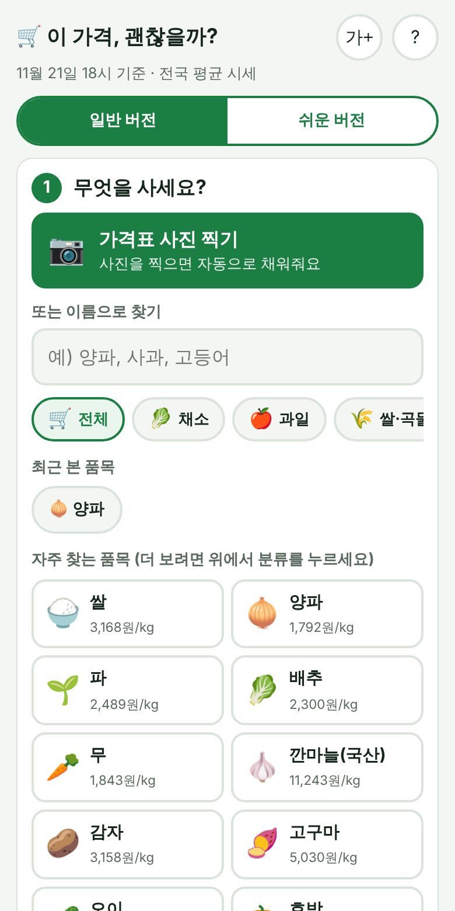
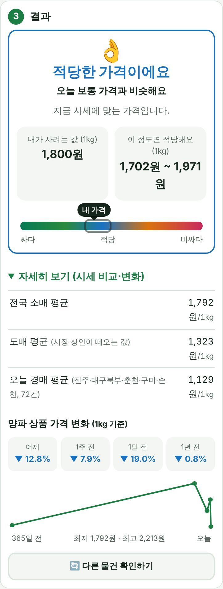
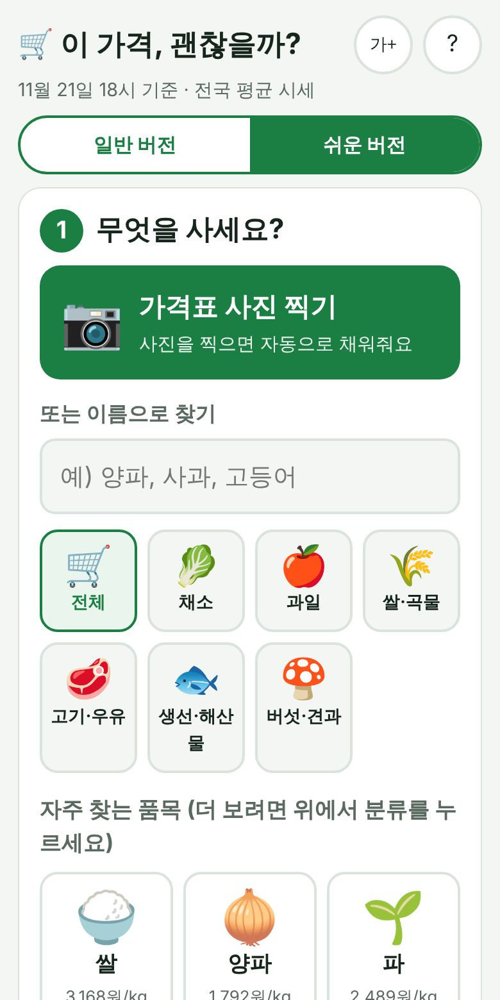
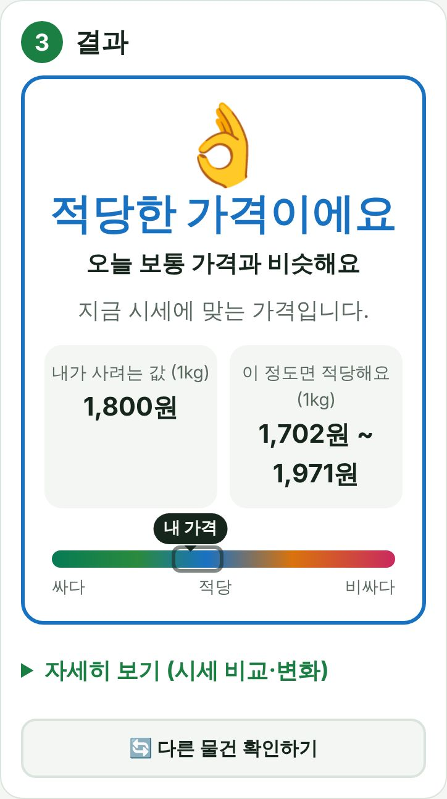

🔀 두 가지 화면 중 골라 쓰세요
앱 맨 위의 일반 버전 / 쉬운 버전 버튼으로 언제든 바꿀 수 있어요. 고른 버전은 기억해 둬요.
- 일반 버전 — 한 화면에 정보가 많이 보이고, 결과 아래 시세 비교·그래프가 바로 펼쳐져요.
- 쉬운 버전 — 글씨와 버튼이 크고, 한 단계씩 차근차근 보여 줘요. 결과는 한 문장으로 알려 줘요.

▲ 일반 버전 첫 화면

▲ 일반 버전 결과 화면 (시세 비교·그래프까지 한 번에)
아래 설명 그림은 쉬운 버전 기준이고, 일반 버전도 순서는 같아요. 쉬운 버전으로 바로 열려면 주소 끝에 ?v=easy 를 붙여 즐겨찾기 해 두세요.
1 무엇을 살지 고르세요

▲ 첫 화면
- 📷 가격표 사진 찍기 — 초록색 큰 버튼을 누르고 가격표를 찍으면 품목·가격·무게를 자동으로 채워 줘요. (가격표를 밝고 정면에서 찍어 주세요.)
- 이름으로 찾기 — 칸에 "양파"처럼 입력해도 되고,
- 그림 버튼(자주 찾는 품목)을 눌러도 돼요. 채소·과일·생선 같은 분류 버튼을 누르면 그 분류 품목만 나와요.
2 가격과 양을 알려 주세요

▲ 양파를 골랐을 때
- 파는 가격 — 가격표에 적힌 금액을 숫자로 적어요. (예: 3000)
- 얼마만큼 주나요? — 500g, 1근, 1kg처럼 해당하는 버튼을 눌러요. 없으면 "직접 입력하기"를 눌러 적어요. (1근 = 600g)
- 어디서 사세요? — 마트는 시장보다 조금 비싼 게 보통이라, 사는 곳에 맞춰 판단해 드려요.
- 같은 품목이 여러 종류면(예: 햇양파, 상품·중품) 위쪽 버튼에서 맞는 걸 골라 주세요.
- 쌀처럼 "20kg", "10kg" 포대로 고르는 품목은 20kg 한 포 가격만 넣으면 돼요. 무게를 또 고를 필요가 없어요.
- 방금 본 품목은 첫 화면 최근 본 품목에 남아 있어서 다시 누르기만 하면 돼요.
3 결과를 확인하세요

▲ 결과 화면
- 🤩 아주 싸요 / 😊 싼 편이에요 / 👌 적당해요 / 🤔 조금 비싸요 / 😱 너무 비싸요 로 알려 드려요.
- 이 정도면 적당해요 — 오늘 시세로 본 적당한 가격 범위예요.
- 아래 막대에서 내 가격 표시가 초록(싸다) 쪽인지 빨강(비싸다) 쪽인지 볼 수 있어요.
- 자세히 보기를 누르면 소매·도매·경매 가격과 최근 가격 변화를 볼 수 있어요.

▲ 자세히 보기
📲 폰 화면에 앱처럼 추가하기
- 안드로이드(크롬): 앱 맨 아래 📲 홈 화면에 추가하기 버튼을 누르세요. 안 보이면 오른쪽 위 ⋮ → 홈 화면에 추가.
- 아이폰(사파리): 아래 가운데 공유 버튼(□↑) → 홈 화면에 추가.
- 글씨가 작으면 위쪽 동그란 가 버튼을 눌러 글씨를 크게 바꿀 수 있어요.
❓ 자주 묻는 질문
- 시세는 얼마나 자주 바뀌나요?
- 매시간 자동으로 새로 받아 와요. 화면 맨 위에 "○월 ○일 ○시 기준"이 표시돼요. (소매 가격은 보통 하루에 한 번 조사돼요.)
- "샘플 데이터"라고 떠요
- 실제 시세가 아닌 연습용 숫자예요. 관리하는 분에게 알려 주세요.
- (추정)이라고 적혀 있어요
- 그 품목은 소매 가격 조사가 없어서 도매가에 1.5배를 곱해 짐작한 값이에요. 참고만 해 주세요.
- 가격표 사진이 이상하게 읽혀요
- 사진 아래 "읽은 글자 보기"에서 확인하고, 틀린 부분은 직접 고쳐 주세요. 가격표가 구겨지거나 손글씨면 잘 못 읽을 수 있어요.
- 너무 싸다고 나오면 무조건 좋은 건가요?
- 아니에요. 무게가 모자라거나 상태가 안 좋은 '떨이' 상품일 수 있으니 꼭 확인하세요.
- 우리 동네 가격과 달라요
- 전국 평균이에요. 지역·품질(상품/중품)·그날 날씨에 따라 다를 수 있어요. 대략의 기준으로 활용해 주세요.
시세 출처: 공공데이터포털 한국농수산식품유통공사(도·소매가격, 공영도매시장 경매). 참고용 정보입니다.
📄 이 설명서를 PDF로 받기 (카카오톡 공유용)